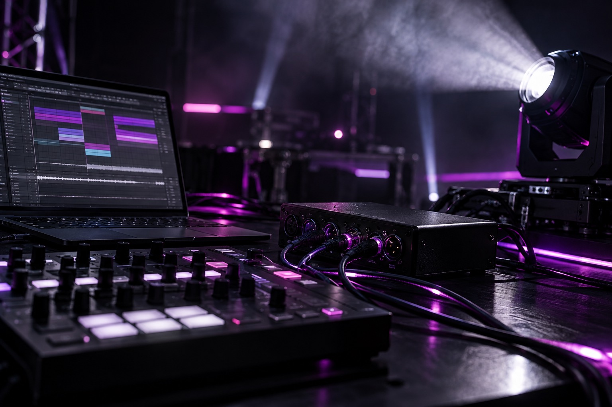
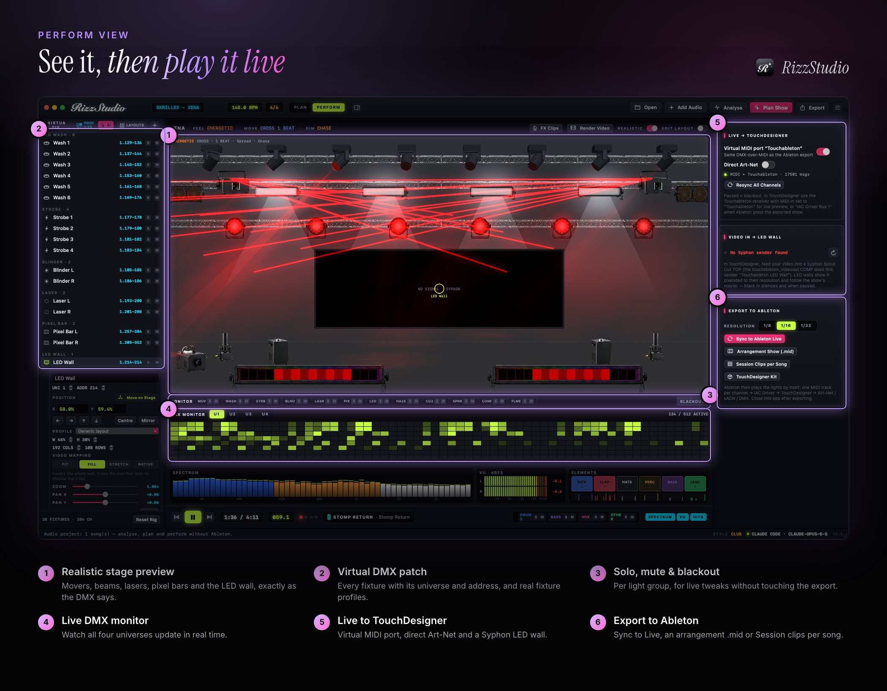

Ableton Live is already the clock of your show, so it makes sense for it to run the lights too. RizzStudio turns Ableton into a DMX lighting controller. It programs a light show for your set and writes it back into Ableton as MIDI, so your lights follow every tempo change, scene launch and live edit.

Why control DMX lighting from Ableton?
- One clock. The lights live in the same timeline as the audio, so drift and timecode are never a problem.
- Follows tempo changes. Warp, nudge or ride the master tempo and the light show moves with it.
- No extra show computer. Ableton plays the show while a light TouchDesigner patch converts it to Art-Net or sACN.
- Works for live sets and DJ sets. Use Arrangement for a fixed set or Session clips per song for improvised performances.
How RizzStudio sends DMX from Ableton
RizzStudio encodes DMX as MIDI notes, an approach that's simple, robust and lossless enough for real shows:
slot = (universe − 1) × 512 + (address − 1) up to 4 universes
MIDI channel = slot ÷ 128 + 1, note = slot mod 128
velocity 1–127 = DMX 0–255 while held, no note = 0You can export the show two ways:
Arrangement show (.mid)
A type-1 MIDI file with one track per MIDI channel. Drop it at bar 1, set each track's MIDI To to the IAC Driver bus and the right channel, and you're done. In DJ-style sets, overlapping songs hand over at the midpoint of the overlap.
Session clips per song
Clip-relative DMX clips you launch next to each audio clip, so lights follow the song wherever you trigger it.
For lean projects, fine channels are dropped and pixel bars are reduced to 1/8-note resolution with 16 levels. You can choose 1/8, 1/16 or 1/32 resolution.

From Ableton to your fixtures
Ableton sends the MIDI to the bundled TouchDesigner receiver, which decodes it and outputs Art-Net or sACN to any node or interface. Every output is remapped to each fixture's real DMX personality using profiles from the Open Fixture Library, so you don't have to re-patch your lights to suit the software.
Supported fixtures
Moving heads (with real pan/tilt ranges, colour and gobo wheels), RGB washes, strobes, blinders, lasers, pixel bars, LED walls and special effects including haze, CO₂, sparkulars, confetti and flame units. Pyro arm channels stay safe unless you arm them live, and they are never armed in exports.
Programming the show
You can program cues yourself on the timeline, but you don't have to. RizzStudio's AI light show generator analyses every song and programs a beat-accurate show automatically. You review and tweak it, then export to Ableton.
Frequently asked questions
Can Ableton Live output DMX?
Not natively. RizzStudio encodes DMX as MIDI notes inside Ableton, and the bundled TouchDesigner receiver turns that MIDI into Art-Net or sACN for your lights.
Do I need Max for Live?
No. The show is plain MIDI clips that any edition of Ableton Live can play.
How many DMX channels can I control?
Up to four universes (2,048 channels), encoded across MIDI channels 1–16.